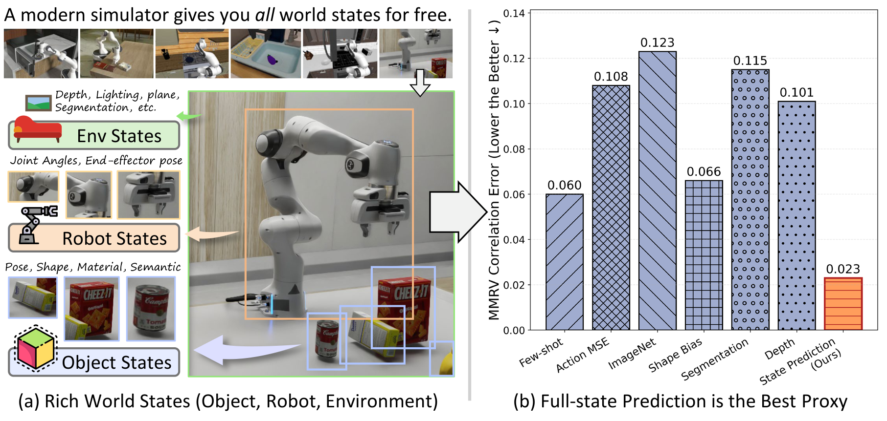
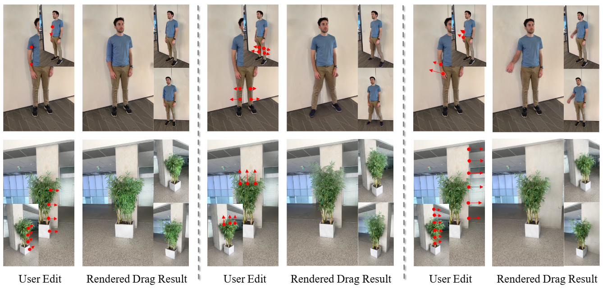
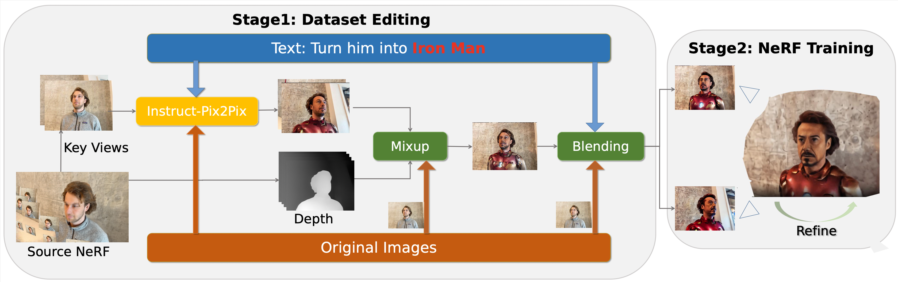

Capturing Visual Environment Structure Correlates with Control Performance
Predicting environment state from images provides a practical proxy for choosing visual representations for robot control.
Computer Science · UIUC
Ph.D. student Computer Vision & Embodied AI
I build visual models that understand
and interact with the physical world.
I am a Ph.D. student at the University of Illinois Urbana-Champaign, advised by Prof. Yu-Xiong Wang. My research connects video generative models, 3D representations, and embodied intelligence.
I am interested in how models represent a changing world: generating coherent scenes, understanding object interactions, and learning representations that support robot control.
Previously, I worked on video world models at Toyota Research Institute and video generative AI at Google. I received my M.S. from UIUC and my B.S. from Zhejiang University.
01 / Research
From visual representations
to controllable worlds.

Predicting environment state from images provides a practical proxy for choosing visual representations for robot control.

Intuitive point-based control for editing the geometry and appearance of 3D Gaussian scenes.

Text-guided 3D editing with geometric and learned regularization to keep edits consistent across viewpoints.
* Equal contribution.
02 / Background
May – Aug 2026
Ph.D. Intern · Human Video World Models
Egocentric video generation, agent motion, and object interactions.
Jun – Dec 2025
Ph.D. Student Researcher · Video Generative AI
Video diffusion, spatial consistency, and world memory for 3D scene generation.
Dec 2023 – Sep 2024
Research Assistant
Visual understanding of geologic maps and multimodal learning for health.
Dec 2021 – Jul 2022
Research Scientist Intern
3D representation learning from RGB images.
May – Nov 2021
Research Scientist Intern
Siamese self-supervised learning and loss-function search.
2024 – Present
Ph.D. in Computer Science
Advisor: Yu-Xiong Wang
2022 – 2024
M.S. in Computer Science
2018 – 2022
B.S. in Computer Science and Technology
Ranked 1st of 186 students
2025First place, Ashby Prize in Computational Science Hackathon, UIUC
2021Zhijun He Scholarship, Zhejiang University
2020National Scholarship, China
CS 173 · Discrete Structures Spring 2023
CS 105 · Intro Computing: Non-Tech Fall 2022
03 / Contact
I’m always happy to discuss research in computer vision,
world models, and embodied intelligence.